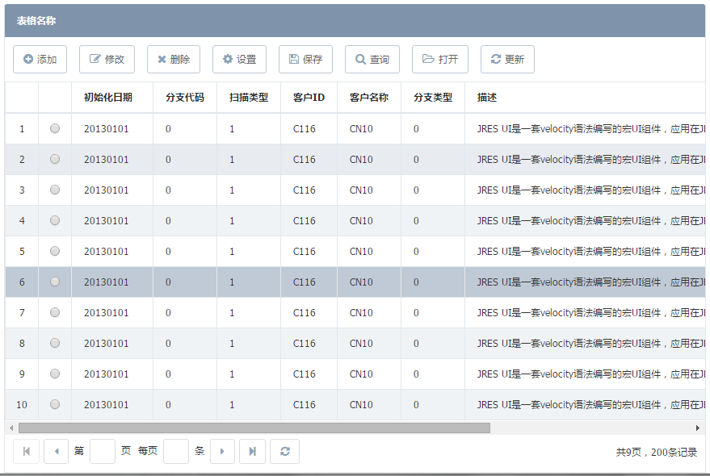

- Horn
- Horn._Pagebar-pagebar
- Horn.Base
- Horn.ButtonPanel
- Horn.Calendar
- Horn.CalendarGroup
- Horn.Checkbox
- Horn.CheckboxGroup
- Horn.Combox
- Horn.DataGrid
- Horn.Field
- Horn.FieldSet
- Horn.Form
- Horn.Grid
- Horn.HiddenField
- Horn.Label
- Horn.Menu
- Horn.MessageBox
- Horn.PageBar
- Horn.Panel
- Horn.Password
- Horn.PasswordGroup
- Horn.QueryTable
- Horn.RadioGroup
- Horn.Screen
- Horn.SelectTree
- Horn.TabPanel
- Horn.TargetSelect
- Horn.Textarea
- Horn.Textfield
- Horn.Tip
- Horn.TypeField
- Horn.Util
- Horn.Validate
- Horn.Window
- Horn.ZtreePanel
DataGrid 可冻结列的数据列表
以多行多列的形式展示数据，支持行数据选中、列的格式转换,支持冻结列
依赖组件
- 无
适用范围
约束
- 不支持行列可编辑功能；
- 不支持分组grid和treegrid；
- 不支持多列头；
- 不支持筛选的功能；
- 不支持导出功能
- 不支持列排序
- 不支持翻页记录
返回的数据格式
- rows:表格当前页展现的数据集合 total:数据总条数，用于计算分页 {"rows":[{...},{...}],"total":100}
使用示例
示例1:
属性
注意：组件的id、name属性只能是英文字母开始，由英文字母、数字和下划线组成，命名时应考虑易识别，不要太长，不要和其他组件重复（表单内的组件除外）。
| 名称 | 类型 | 描述 | 默认值 | ||||||||||||||||||||||||||||||||||||||||
|---|---|---|---|---|---|---|---|---|---|---|---|---|---|---|---|---|---|---|---|---|---|---|---|---|---|---|---|---|---|---|---|---|---|---|---|---|---|---|---|---|---|---|---|
| id | String |
组件唯一标识。 示例：无 |
"" | ||||||||||||||||||||||||||||||||||||||||
| name | String |
组件名称。通过Horn.getComp(name)来获取组件。 示例：”name":"dataGridName"
Horn.getComp("dataGridName");
|
"" | ||||||||||||||||||||||||||||||||||||||||
| data | array |
列表初始化数据。加载的静态数据,可以使用内置的分页栏，支持前端数据分页特性 示例："data":$!somedata somedata为springMVC当中Model中数据集的键 |
"" | ||||||||||||||||||||||||||||||||||||||||
| selectModel | String |
组件启用单选/多选选择框,当值为single时为单选列表，仅能够选择一条数据；当其值为multi时为多选列表，可同时选择多条数据。 示例："selectModel":"single",单选列表 "selectModel":"multi",多选列表 |
无 | ||||||||||||||||||||||||||||||||||||||||
| autoLoad | boolean |
组件是否自动加载url指向的数据集的控制开关。当autoLoad为true时会自动ajax请求url，并加载请求到的数据。 示例："autoLoad":true,"url":"/data/get_data.htm" |
false | ||||||||||||||||||||||||||||||||||||||||
| baseParams | object |
组件初始化加载数据列表的基础参数,基础参数每次请求时都会传入。 示例：无 |
无 | ||||||||||||||||||||||||||||||||||||||||
| autoWidth | boolean |
autoWidth可以配置在items中的某一项，使这一列成为根据内容自适应的宽度 autoWidth可以配置在表上，使当前所有的列都成为根据内容的自适应 表头也作为其所在列的内容，也会计算长度 如果当前列配置了固定宽又配置了autoWidth则固定宽配置生效（固定宽配置的优先级最高） 如果当前列为配置了renderer或者dataType或者buttons等会变更数据长度的属性，则autoWidth配置不可使用，请直接使用width配置固定宽 示例：无 |
false | ||||||||||||||||||||||||||||||||||||||||
| items | object |
表格的列数据模型对象。控制数据列表的列显示状态，包含许多可配置参数。 示例：
|
无 | ||||||||||||||||||||||||||||||||||||||||
| url | string |
数据请求的地址。请求该地址后返回的数据为符合要求的json数据对象。 示例：后台返回的数据格式例子：
total：总条数
rows :数据集[分页场景存在，返回的数据结构]
{"total":200,
"rows":[{"id":"1","name":"zhangsan"},
{"id":"2","name":"zhangsan"},
{"id":"3","name":"zhangsan"}]
|
"" | ||||||||||||||||||||||||||||||||||||||||
| numbercolumn | boolean |
列表是否配置序号列的开关。默认不配置序号列。 示例：无 |
false | ||||||||||||||||||||||||||||||||||||||||
| title | string |
datagrid的标题展示。 示例：无 |
无 | ||||||||||||||||||||||||||||||||||||||||
| buttons | object |
datagrid的titleButton显示。 示例：默认的图标样式有add/edit/query/del/save/refresh/open
还可以在按钮中关联menu组件，配置方式为，"refmenu":"test"//该按钮关联的menu组件（菜单）
"buttons":[{"label":"测试","name":"test","cls":"del"},{"label":"测试","name":"test","cls":"del"},{"label":"测试","name":"test","cls":"del"},{"label":"测试","name":"test","cls":"del"},{"label":"测试","name":"test","cls":"del"},{"label":"测试","name":"test","cls":"del"}]
默认提供了add,edit,del,save,query,refresh,open供选择
"buttons":[{"label":"新增","cls":"add","refmenu":"test11","event":"add()"},
{"label":"修改","cls":"edit","refmenu":"test11","event":"edit()"},
{"label":"删除","cls":"del","refmenu":"test11"},
{"label":"保存","cls":"save","refmenu":"test11"},
{"label":"查询","cls":"query","refmenu":"test11"},
{"label":"刷新","cls":"refresh","refmenu":"test11"},
{"label":"打开","cls":"open","refmenu":"test11"}
]
|
无 | ||||||||||||||||||||||||||||||||||||||||
| height | number |
配置表格的高度的属性，默认是自适应宽高。 示例：无 |
无 | ||||||||||||||||||||||||||||||||||||||||
| width | number |
配置表格的宽度的属性，默认是自适应宽高。 示例：无 |
无 | ||||||||||||||||||||||||||||||||||||||||
| bindFormName | String |
如果有绑定表单，就会把表单参数提交到后台。 示例："bindFormName":"formName" |
无 | ||||||||||||||||||||||||||||||||||||||||
| rowSelect | boolean |
配置点击行选中的开关。默认不开启。配置开启后当点击列表行会主动选中这一行的数据而不需要点击选择框。 示例："rowSelect":true可以开启行选中 |
false | ||||||||||||||||||||||||||||||||||||||||
| hasPage | boolean |
配置是否启用分页栏的开关，默认不开启分页栏。同时可以支持静态数据和动态加载，以及loadData的分页 示例："hasPage":true可以配置开启分页栏, 暂时对于静态数据不提供分页栏！ |
false | ||||||||||||||||||||||||||||||||||||||||
| pageConfig | object |
配置分页栏的参数，仅在开启分页栏的时候有效。 示例："pageConfig":{"pageSize":20,"pageNo":3}
其中pageSize表示每页的显示的数据条数;pageNo为当前显示页数，当pageNo值大于实际总页数时，自动取实际最大页码数
|
无 | ||||||||||||||||||||||||||||||||||||||||
| frozen | string或者array |
1.冻结列的配置项，支持单列冻结和多列冻结，冻结的数据列在横向滚动时保持位置不变。 2.此属性支持IE8及以上，不支持IE7。3.不建议配置超过三列的冻结内容（冻结列过多会影响datagrid渲染的效率和性能！）,不建议在弹出窗口(window组件)上使用 4.冻结列区域上不支持单击、双击事件的触发。 示例：“frozen”:["name1","name2"]，可以冻结items当中name属性配置为name1,name2的那两列列数据。 |
无 | ||||||||||||||||||||||||||||||||||||||||
| events | Array |
事件属性，所有的事件都需要在此配置 示例： "events":[{ "event":"rowClick","function":"testRowClick"},
{"event":"rowDblclick","function":"testRowDblClick"},
{"event":"beforeLoad","function":"testbeforeLoad"},
{"event":"loadSuccess","function":"testloadSuccess"},
{"event":"loadError","function":"testloadError"}]
|
无 |
事件
| 名称 | 参数 | 描述 |
|---|---|---|
| rowClick | function(rowdata) |
行单击事件 无 |
| rowDblclick | function(rowdata) |
行双击事件 无 |
| beforeLoad | function(comp, param) |
异步数据加载前 |
| loadSuccess | function(comp, resultData) |
异步数据加载成功,且表格初始化后 无 |
| loadError | function(comp, resultData) |
异步数据加载成功，但数据格式错误时（数据为空）逻辑错误，非ajax请求失败触发 无 |
方法
| 名称 | 参数 | 描述 |
|---|---|---|
| setButtonDisabled | (name, disabled) |
启用/禁用 表格里的按钮栏的某个操作按钮 参数:#jscode()
Horn.getComp("datagridName").setButtonDisabled("delBtn",true);
#end
|
| load | (url, params) |
请求数据。 url不传，则请求url使用组件默认的url属性 参数: |
| loadData | (data) |
加载数据到表格中 参数: |
| getId |
() |
返回组件id 返回值: |
| getSelecteds |
() |
返回选择的数据 返回值: |
| unSelectAll | () |
取消选中所有行数据，只针对多选模式，单选模式下无效 返回值: |
| selectAll | () |
选中所有行数据，只针对多选模式，单选模式下无效 返回值: |
| setBaseParams | (params) |
向后台发送请求时的用户自定义参数，被设置的参数会做为基础查询条件，即每次查询是都会传入后台 参数: |
| setSize | (width, height) |
设置控件的宽度和高度 参数: |
| setWidth | (width) |
设置控件的宽度 参数: |
| setHeight | (height) |
设置控件的高度 参数: |
| select | (row) |
选择一行记录 参数: |
| unselect | (row) |
取消选择一行记录 参数: |
| setTitle | (title) |
设置表格的标题 参数: |
| getTitle | () |
获取表格的标题 参数: |
| addButton | (obj) |
动态添加标题按钮 参数: |
| hideButton | (Strng:name, Boolean:hide,为true时隐藏，为false时展示) |
动态隐藏与显示标题按钮 参数: |
Defined in: DataGrid.js